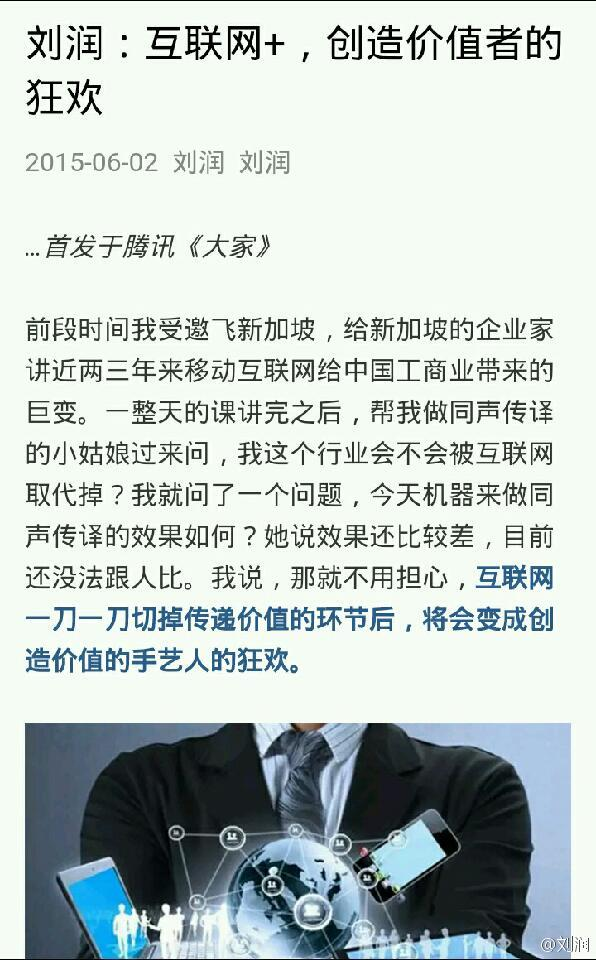

Bella提到有个客户说在新媒体上投入很大，但三分之二的营收还是销售去跑出来谈出来的。— 新媒体只是改变了传播渠道，传播方式等，但以告知到成交的比例来算，和旧媒体应该是一致的。是否采用新媒体，应该从获取用户成本上来考虑，而不是新旧。

Ada李力
2015-06-08
Ada李力
2015-06-08
如果可以选择，未来争取做那些创造价值的工作，避免仅传递价值的领域。互联网是带来了这样一个趋势。
@刘润:
我在《腾讯大家》的专栏文章：互联网一刀切掉传递价值的环节之后，其实让创造价值者得到了更大的收益。所以互联网其实是用更高效率的手段，砍掉了很多传递价值的环节，从而进入了创造价值者的狂欢。 |  刘润：互联网+，创造价值者的狂欢
刘润：互联网+，创造价值者的狂欢
- 

Ada李力
2015-06-08

@Ada李力:
北京，香港，上海都呆过，博主把这几个城市归纳得太精辟了。可能选择在北京，就是因为这是我所了解到的，中国领土内最能让人做自己，也是我感觉最自在的城市。纽约没去过，希望以后有机会在那里生活一段时间。  比选择在哪里生活更重要的，是选择怎样的生活
比选择在哪里生活更重要的，是选择怎样的生活


Ada李力
2015-06-08
上中学给某同学留言写的是：“经常说你坏话的不一定是敌人，经常说你好话的不一定是朋友”。我当然是说她坏话的，而且还自认为是她朋友。－ 唉，如果遇到当年的自己，我也是会很讨厌这样的人啦，平白破坏别人的好心情，还自以为掌握真理。
Ada李力
2015-06-08
顺藤摸瓜，小号关注了一堆女人的微博，晒吃，晒穿，晒单的...... 真的感觉进入了一个新奇的世界，是个我以前完全不熟悉的领域。抱着学习的心态看这些内容，真是是学习。